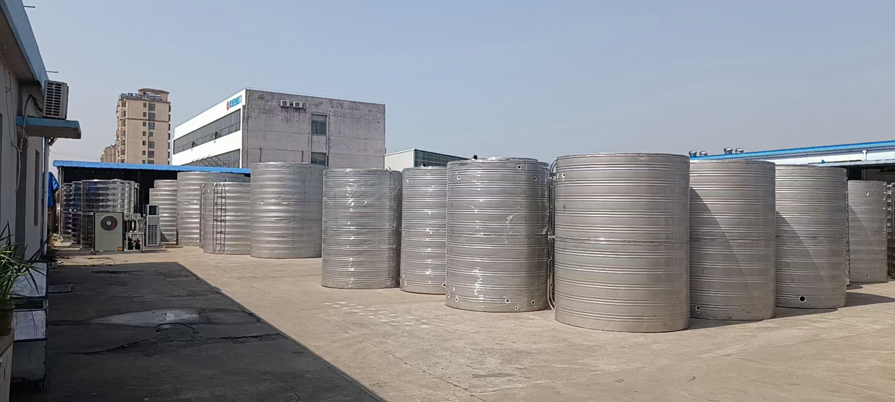

Round Stainless Steel Tank
Vertical · Horizontal · Customizable

Round Stainless Steel Tank
Vertical · Horizontal · Customizable
Material Quality
Our round tanks are manufactured using premium Grade A SUS304-2B stainless steel — a food-grade material with excellent corrosion resistance, heat resistance, low-temperature strength, and mechanical properties. The material offers superior workability for stamping, bending, and other hot forming processes.
Advanced Welding Technology
We utilize the YW-150 high-frequency pulse welding machine, specifically designed for uncoated low-carbon steel and stainless steel sheet products. The welding system features a precision controller that accurately manages both welding and pause intervals to ensure consistent quality. The pneumatic pressing mechanism securely holds workpieces during welding, guaranteeing optimal weld integrity.
Key Features
- ✓ Grade A SUS304-2B food-grade stainless steel
- ✓ Excellent corrosion and heat resistance
- ✓ Superior low-temperature strength
- ✓ YW-150 high-frequency pulse welding technology
- ✓ Pneumatic pressing for weld consistency
- ✓ Capacities from 0.5m³ to 100m³
Specifications
| Material | Grade A SUS304-2B (Food-grade, 8%+ nickel content) |
|---|---|
| Capacity Range | 0.5 m³ — 100 m³ (custom sizes available) |
| Wall Thickness | Bottom: 2.5mm / Middle: 1.5-2.0mm / Top: 1.0mm |
| Working Temperature | -20°C to 90°C |
| Insulation | 50mm polyurethane foam (optional) |
| Welding Technology | YW-150 high-frequency pulse welding with pneumatic pressing |